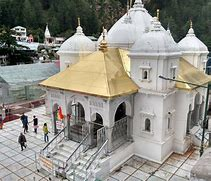

One of the char dhams (the most sacred pilgrimage circuits in northern India with four holy destinations), Gangotri, in Uttarkashi, is a small town with the temple of Goddess Ganga at its heart. A 12-hour drive from Rishikesh, Gangotri is nestled among lofty Garhwal Himalayan peaks, glaciers and dense forests, and is one of highest pilgrimages in India (approx 3,415 m). Other than its divine atmosphere, Gangotri offers stunning vistas all around. According to Hindu legends, the most sacred of all rivers, Ganges (or Ganga), descended from heaven to earth at Gangotri, when Lord Shiva released the mighty river from his locks. The actual origin of the river is at Gaumukh in the Gangotri glacier, 19 km away from Gangotri and is accessible by trekking. After it originates from Gaumukh, the river is known as Bhagirathi and it acquires the name 'Ganga' after the river Alaknanda merges into it near the town of Devaprayag. Kapat is open now for darshan.
When to visit
Gangotri becomes a bustling hub of devotees during the Char Dham Yatra season (May to October).
